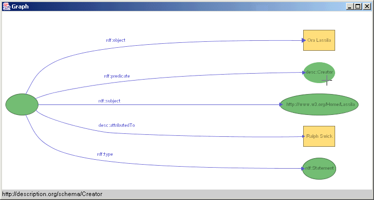
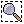
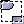
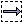

IsaViz is a visual environment for browsing and authoring RDF models, represented as directed graphs. Resources and literals are the nodes of the graph (ellipses and rectangles respectively), with properties represented as the edges linking these nodes.
IsaViz features:
IsaViz is implemented in Java and requires a JVM 1.3.x or later to run (1.4.0 or later strongly recommended - see Known problems), as well as GraphViz for some features. Installation instructions are available.
IsaViz saves user preferences (directories, proxy settings, etc...) in a file named isaviz.cfg. A default is read from the main directory the first time you launch IsaViz, and as long as you do not save your own preferences. When you save personel preferences, it will be saved in a system-dependent location so that it does not get overwritten when you install a new version of IsaViz.
The directory in which the file is saved depends on your platform and settings. This should be your home directory, which is typically /home/user_name/ under UNIX/Linux or C:\Documents and Settings\user_name\ under Windows (2000) systems. If you want to know which directory IsaViz identified as your home directory, go to the Help/About window and scroll the text area down to User home directory.
All mouse interactions are achieved through single mouse clicks. Only one command uses the left button double click (when opening a resource's URI in the web browser). Do not use double clicks for anything else.
The left mouse button's action depends on what tool is selected in the palette of icons. The right mouse button is used to navigate in the Graph view, no matter which tool is currently selected.
The IsaViz environment is composed of four main windows:

IsaViz can import RDF models stored in the following formats: RDF/XML and N-Triples. This feature requires that GraphViz is installed on your machine and properly configured for IsaViz. GraphViz is used to compute the initial layout of the graph (see Installation instructions).
Import commands are located in the File/Import menu. You can either choose to replace the current model (if any) or merge the new file with the current model. In each case, you can import local files, but also remote files through HTTP. If you are behind a firewall, you can configure your proxy settings in the Proxy tab of the Preferences window.
Note: if nothing happens or if you get an error when importing RDF, try changing your version of GraphViz in the Preferences window (Directories tab, "1.7.6" vs. "1.7.11 or later"). The SVG output generated by GraphViz changed between version 1.7.6 and later ones, and IsaViz needs to know which version you're using in order to correctly parse temporary files created during the import process.
Note: merging files might do some unexpected things if you try to merge files containing anonymous resources which were exported by Jena (and therefore IsAViz) using the standard (non-abbreviated) syntax. Indeed, in this case, Jena converts the anonymous resources into named resources following a preset convention (#A0, #A1, etc...). This means that models which initially contained anonymous resources but which were serialized using the non-abbreviated syntax by Jena can potentially contain resources with the same name (e.g. #A0) but which are not actually the same thing. Therefore, if you plan to later merge different models you are manipulating in IsAViz, you should not export them using the non-abbreviated syntax.
RDF models created in IsaViz can be exported as RDF/XML or N-Triples. By default, when exporting as RDF/XML, IsaViz uses non-abbreviated syntax, but you can also choose to use abbreviated syntax (in the Misc. tab of the Preferences window).
Additionally, it is possible to export the current view as a bitmap image (PNG format) or the entire graph as an SVG document.
Export commands are located in the File/Export menu.
It is possible to preview an RDF/XML serialization of the model in its current state. Go to the View menu and select Show RDF/XML.
Some information, such as custom layout of the graph, as well as incomplete models or partly deactivated (commented) models cannot be saved in standard RDF. Therefore, IsaViz also features its own XML file format to save your projects. These project files store and restore the model "as is", therefore loosing no information.
IsaViz projects are loaded and saved using the Open Project and Save Project (as) commands in the File menu. The extension of IsaViz project files is .isv
One of the metaphors underlying the VTM is that of infinite virtual spaces that are explored using cameras that can be moved and zoomed. As the workspace is infinite, the concept of scrollbar is therefore not applicable to VTM windows (called views).
The right mouse button is used to navigate in the Graph view. No matter what tool is currently selected, you can always navigate in the view using the right mouse button. Hold it and drag the mouse in any direction. The view will move accordingly (actually you are moving the camera in the workspace). The speed with which the camera moves is proportional to the length of the "drag" segment (displayed on screen as a black line linking the point where you started dragging to the current mouse position).
To zoom in and out, hold down the shift key and, as before, drag the mouse using the right mouse button. In this case, only vertical quantities are taken into account. To zoom in, drag the mouse upward. To zoom out, drag it downward.
There are two additional ways of navigating in the graph. The first one is by clicking, still with the right mouse button, on a node or on the text of a property. This will center and zoom the view on this item. The second navigation tool is represented by icon  in the palette. Select this icon. In the Graph view, press the left mouse button and drag the mouse. This will draw a rectangle delimiting the region of interest. When you release the left mouse button, the camera will be centered on this region.
As it can be difficult to get a clear view of all properties of a given resource, when there are many, IsaViz provides a textual property browser. This browser can be accessed (when a resource is selected) either by selecting the Property Browser tab in the Definitions window or by clicking on the Show Properties button in the Attributes window.

The above image shows the property browser displaying all properties of resource http://www.daml.org/2001/08/baseball/baseball-ont#Stadium with their values. (R) indicates that the object of the statement is a resource, (AR) indicates an anonymous resource, and (L) a literal.
These values act as hyperlinks. A left click on a value will traverse the link, provided the value is itself a resource, and display the properties defined for that resource. The back button in the upper-right corner of the browser can be used to go back to the previous resource.
A right click will center the camera on the corresponding node in the Graph view.
Note: the property browser, when accessed through the Show Properties button, behaves in a slightly different way. It pops up a new window for each new browsed resource.
Single items can be selected using this tool: . To select resources and literals, just click (left mouse button) inside the ellipse or rectangle. To select properties, you can click on their associated text, on the spline, or on the arrow head. Because of the zooming feature, the algorithm used to check if the mouse is on top of a spline is not 100% reliable, especially when trying to select complex splines. You will sometimes have to click slightly off the spline in order to select it, as shown in the image below.

To unselect all elements, click in an empty region.
When selecting a new item, the previous selection is automatically unselected. If you do not want to unselect the previous selection, hold the Ctrl key down while selecting the new item.
Selecting an item just selects this item. If you want to select an item and all items which are directly linked to it, hold the Shift key down while selecting the main item. For instance, holding Shift down while selecting a resource will automatically select all properties of statements for which this resource is the subject or the object. In a similar way, holding Shift down while selecting a property will also automatically select the subject and object of the associated statement. The image below illustrates the use of Shift when selecting a resource.
Note: the Shift and Control modifiers can be combined.
You can also select all the resources and literals in a region using this tool , or all properties using this tool  (the start point of the spline representing a property has to be inside the selection rectangle in order for this property to get selected).
Ctrl and Shift have the same functions as for the Single Selection tool.
Complex selections can be made using Edit/Advanced Selection. Hitting the Select button will select all resources, literals and properties matching the conditions entered in the associated text fields:
Note: selecting items through the Select button does not automatically unselect previous selections.
The image below shows how to select all resources whose URI contain 'www' plus all 'Title' properties of the Dublin Core namespace (provided it is binded to prefix 'dc').

Finally, you can search the graph for specific text strings, using the Quick Search text field of the icon palette. This will center the view on an occurence of the specified string, no matter whether it is a resource, property or literal, and in no particular order. Quick Search highlights the result in the graph but does not actually select the item. When the end of the list of matching elements is reached, IsaViz loops back to the first element and continues.
New resources can be created using this tool  . Click in an empty region of the virtual space with the left mouse button. This will popup a dialog asking you for some information about the new resource. If you hit enter or click OK without specifying anything in the About text field, you will create an anonymous resource. Select URI if you want the resource's URI to be exactly what you entered, or ID if you want to automatically prepend the default namespace prefix to it.
. Click in an empty region of the virtual space with the left mouse button. This will popup a dialog asking you for some information about the new resource. If you hit enter or click OK without specifying anything in the About text field, you will create an anonymous resource. Select URI if you want the resource's URI to be exactly what you entered, or ID if you want to automatically prepend the default namespace prefix to it.
The URI of a resource can be changed through the Attributes window. Select the resource using the selection tool in the palette, and its attributes will be displayed in this window. The resource can be made anonymous, its URI can be modified, and it can be deleted. See Section 5.2 for more information on the Show Properties button.
New literals can be created using this tool  . Click in an empty region of the virtual space with the left mouse button. This will popup a dialog asking you for some information about the new literal. The lang text field is used to specify the xml:lang attribute of this literal, and Well-formed XML tells whether the content of this literal is well-formed XML or not.
. Click in an empty region of the virtual space with the left mouse button. This will popup a dialog asking you for some information about the new literal. The lang text field is used to specify the xml:lang attribute of this literal, and Well-formed XML tells whether the content of this literal is well-formed XML or not.
Note: If no xml:lang attribute is specified, this attribute will not be created in the serialization. You can choose to always output this attribute by selecting the appropriate checkbox and entering a default language code in the Preferences window.
As for resources, the attributes of a literal can be changed through the Attributes window. Select the resource using the selection tool in the palette, and its attributes will be displayed in this window.
New properties can be created using this tool  . First, select a property type in the Property Types tab of the Definitions window. Then go in the Graph view and click the left mouse button in the subject of the new statement (the subject has to be a resource). Intermediate points for the spline representing the property can be created by clicking the left mouse button along the path between the subject and the object, as shown in the figure below. When you are finished creating intermediate points on the spline, click the left mouse button inside the object of the statement (which can be a resource or literal).
. First, select a property type in the Property Types tab of the Definitions window. Then go in the Graph view and click the left mouse button in the subject of the new statement (the subject has to be a resource). Intermediate points for the spline representing the property can be created by clicking the left mouse button along the path between the subject and the object, as shown in the figure below. When you are finished creating intermediate points on the spline, click the left mouse button inside the object of the statement (which can be a resource or literal).
New properties can only be created between already existing resources and literals, and a property type must be selected in the Property Types tab. It is possible to change the property type of a given statement through the Attributes window (properties are sorted by namespace).
 |
Note: You can cancel the creation process by clicking the right mouse button any time after you have begun drawing the spline (this is the only time when the right mouse button is not used to navigate in the view).
Note: A resource can be both the subject and object of a statement at the same time. When creating such properties, you should draw at least two intermediate points outside the ellipse for the spline so that it gets visible, as in the example below.
Property types are managed through the Property Types tab of the Definitions window. IsaViz provides some common property types from the RDFMS and RDFS namespaces. Property types used in imported RDF models are automatically included in the table, and it is also possible to enter new property types by hand. The leftmost text field at the bottom of the tab is used to indicate the namespace the new property belongs to. You can either enter the full URI of this namespace (e.g. http://www.w3.org/1999/02/22-rdf-syntax-ns#), or the prefix it is currently bound to (in that case followed by a colon ":", e.g. rdf:). The second text field is the name of the property (e.g. object). When you've filled in both fields, click the Add Property button and it will be added to the table. You can then select it and create new properties of this type in the Graph view.
Note: When adding a new property type, if you choose to specify the property's namespace using its prefix, this one must already have been defined in the Namespaces tab before it is used to specify the property type's namespace. But it is not required that a prefix is bound to the namespace as long as you use the full namespace's URI in the first text field. You can choose to bind a prefix to (or edit the prefix of) this namespace later; the modifications will automatically be propagated.
You can also remove a property type from the table using the Remove Selected button. This will not remove the properties of this type in the graph, but just the constructor from the table. Finally, you can load all the property types used in an existing RDF/XML file using the Load Properties button. This, of course, will not affect the current model.
Note: IsaViz provides a special property type called Membership property auto-numbering. When selected, this property type creates a membership property with the lowest number available. For instance, if a resource of type rdf:Seq already has two properties (_1 and _2), the new one will automatically be assigned type _3. If you want to assign a specific number to a given property, you can always create this specific property type (e.g. _47). As they are not of great use, these property types are stored at the bottom of the table.
Each property type belongs to a namespace. These namespaces usually have to be bound to a prefix. For instance, the Dublin Core namespace (http://purl.org/metadata/dublin_core#) is often bound to prefix "dc". Namespace bindings are defined in the Namespaces tab of the Definitions window. You can modify an existing binding by editing the cells of the Prefix column. You can also add new bindings. The leftmost text field at the bottom of the tab is used to specify the prefix. The second textfield is used to specify the namespace URI. You can enter a new namespace without a prefix and specify the prefix later. It is also possible to remove an existing binding, either by setting the Prefix cell to blank or by removing the entire row using the Remove Selected button. At serialization time, namespaces which are not bound to a prefix get automatically bound to prefixes generated by Jena.
For each individual namespace definition, you can choose to display either the full namespace URI or the prefix in the Graph view by selecting the checkbox in the cell at the far right of each row.

Note: Namespaces added to the table when importing a model from RDF/XML or NTriples do not get bound to their original prefix because this information is not available in the current implementation of Jena. This should be fixed in a future release.
It is possible to cut the current selection and put it in IsaViz's clipboard using this tool  , or the Edit/Cut menu, or the Ctrl+X shortcut.
, or the Edit/Cut menu, or the Ctrl+X shortcut.
It is possible to copy the current selection to IsaViz's clipboard using this tool  , or the Edit/Cut menu, or the Ctrl+C shortcut.
, or the Edit/Cut menu, or the Ctrl+C shortcut.
Note: IsaViz's clipboard is not the native clipboard, but an internal one, except when copying text only items from Swing widgets.
The content of IsaViz's clipboard can be pasted multiple times using this tool  , or the Edit/Paste menu, or the Ctrl+V shortcut. To prevent conflicts, pasted resources get renamed following this scheme: if the original resource does not exist any longer (for instance if it has been cut), the pasted resource is assigned the same URI as the original resource. If it still exists, the pasted resource gets the same URI to which is appended a text string made of "--copy-" plus the lowest available number, starting from 1.
, or the Edit/Paste menu, or the Ctrl+V shortcut. To prevent conflicts, pasted resources get renamed following this scheme: if the original resource does not exist any longer (for instance if it has been cut), the pasted resource is assigned the same URI as the original resource. If it still exists, the pasted resource gets the same URI to which is appended a text string made of "--copy-" plus the lowest available number, starting from 1.
As mentioned earlier, resources, literals and properties can be deleted using the Delete button in the Attributes window. It is also possible to delete the current selection by pressing the Delete key, or using the Edit/Delete menu. When deleting a resource or literal, all associated properties are automatically deleted, as pending properties are not allowed.
IsaViz provides a multiple-level undo function. The last operation can be undone using this tool  , or the Edit/Undo menu, or the Ctrl+Z shortcut. For now, only the Cut, Paste and Delete operations can be undone.
, or the Edit/Undo menu, or the Ctrl+Z shortcut. For now, only the Cut, Paste and Delete operations can be undone.
It is possible to deactivate (and reactivate) a single resource, literal or predicate, or all of these in a specific region, using these tools:  and
and  (deactivation),
(deactivation),  and (reactivation). The idea of deactivation is close to the idea of commenting out part of an XML file, or part of the source code in a programming language. The deactivated items still exist in IsaViz. They can be edited, moved, selected, they get saved, but they are not part of the model. This means that they are not taken into account when exporting the model as RDF/XML or NTriples.
and (reactivation). The idea of deactivation is close to the idea of commenting out part of an XML file, or part of the source code in a programming language. The deactivated items still exist in IsaViz. They can be edited, moved, selected, they get saved, but they are not part of the model. This means that they are not taken into account when exporting the model as RDF/XML or NTriples.
Again, as pending properties are not allowed, properties whose subject or object is deactivated automatically get deactivated.
Use this tool  to move or edit the geometry of nodes and splines.
to move or edit the geometry of nodes and splines.
To move a resource or a literal, press the left mouse button inside the shape and drag the mouse to the new location. When pressing the left mouse button, you will also notice four little black boxes appearing on the sides of the shape. These are control handles that can be dragged to resize the node. To make them disappear, just click in an empty region or select another tool in the palette.

You can also independently move the text associated with the shape. Hold Ctrl down, press the left mouse button with the mouse above the text and drag it to its new location.
Splines are made of bezier curves. When you click with the left mouse button on a spline, or on the arrow head attached to one end of the spline, small black and red boxes linked by a broken line will appear, as in the image below. The black boxes represent curve points (points which are on the curve), whereas the red boxes represent control points (which determine the shape of the curve by controlling one or both of the endpoint tangent vectors). See Splines in IsaViz for more details.
You can move any point by dragging it with the left mouse button. You can also move a point and its two direct neighbors simultaneously by holding Ctrl down.
It is also possible to insert or remove new points in the spline. Place the mouse cursor inside a curve point (black box). To add a new point just after this point, press "+". To remove it, press "-". This will not work with control points (red boxes) as we are actually adding/removing complete bezier curves, not just one point.

Note: If you drop one of the two endpoints inside a shape other than the one it is attached to, you will change the associated statement. Modifying the shape to which the tail, or head, of the spline is attached will change the corresponding subject or object of the statement. For instance, in the above image, dropping the head of the spline in literal "Jean" would change the statement from
<http://www.xrce.xerox.com/people/pietriga/> <people:firstname> "Emmanuel"
to <http://www.xrce.xerox.com/people/pietriga/> <people:firstname> "Jean".
You can also move the text associated with the spline. Press the left mouse button with the mouse above the text and drag it to its new location. Note: you can hold Ctrl down, but this is not mandatory.
If GraphViz/dot is installed on your computer, you can ask it to compute a new layout of the current graph. Go to the View menu and select Suggest Layout. Note that this action cannot be undone.
IsaViz offers the possibility to open the URI of a resource in your web browser. This is done by double-clicking in the node representing the resource in the Graph view. Configure your web browser from the Preferences window. You can ask IsaViz to try to automatically detect your browser. If this does not work, or if you want to specify another browser, you can also specify it manually.
If you are behind a firewall and want to import remote RDF models, you can set a proxy in the Preferences window.
VTM views can be set to render their content using antialiasing, which makes the graph look better, but significantly reduces the refresh rate. It should only be turned on when you want to export the Graph view to a bitmap image, or if you have an extremely fast computer.
 |
 |
Antialiasing OFF |
Antialiasing ON |
If you want to make comments, bug reports or simply ask a question, use the following mailing list: www-isaviz@w3.org. To subscribe to the list, send an e-mail to www-isaviz-request@w3.org with subscribe in the subject header. See http://www.w3.org/Mail/Request for more details.
IsaViz was developed by Emmanuel Pietriga in collaboration with Xerox Research Centre Europe and is built upon the Visual Transformation Machine.
It also includes software developed by:
and makes use of the GraphViz library developed by AT&T Research.
| Ctrl+N | New Project |
| Ctrl+O | Open Project |
| Ctrl+S | Save Project |
| Ctrl+Q | Exit |
| Ctrl+Z | Undo |
| Ctrl+X | Cut Selection |
| Ctrl+C | Copy Selection |
| Ctrl+V | Paste Selection |
| Del | Delete Selection |
| Ctrl+A | Select all nodes |
| Ctrl+E | Show Error Log |
| Ctrl+G | Get a global view of the graph |
| + | Insert a new segment (quadratic curve) in a spline representing a property |
| - | Remove a segment in a spline representing a property |
| Left_Mouse_Button | Primary action associated to the currently selected tool. Depending on the tool, Shift and Ctrl may modify the command. |
| Middle_Mouse_Button | Contextual menu (not implemented yet - these will only contain redundant access to commands since all mice do not have three buttons). |
| Right_Mouse_Button | Pan the view (drag in any direction). |
| Shift+Right_Mouse_Button | Zoom the view (drag upward for zoom in, downward for zoom out). |